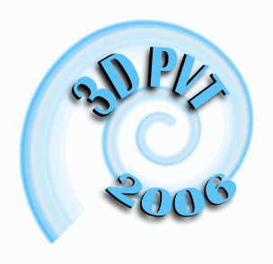

Home
Publications
Teaching
Service, Awards and
Other Activities
CV (pdf)
|
GRANTS
- DOE SBIR Phase I: "Hypertunnel - a MR/VR remote collaboration system", PI: E. Neeter (FactualVR), Stevens PI: P. Mordohai. 01/2019-06/2019.
- Google AR/VR Research Awards: "Anytime Stereo Reconstruction", PI: P. Mordohai. 12/2018-12/2019.
- NSF: "NRI: Collaborative Research: Autonomous Quadrotors for 3D Modeling and Inspection of Outdoor Infrastructure", PI: P. Mordohai, 09/2016-08/2019.
- NIH: "NRI: An Egocentric Computer Vision based Active Learning Co-Robot Wheelchair", Original PI: G. Hua, PI since 9/2015: P. Mordohai, 09/2014-08/2018.
- NSF Robust Intelligence: "Learning to Eliminate Heuristics in Stereo Vision", PI: P. Mordohai, 09/2015-08/2018.
- NSF Robust Intelligence: "Group Travel Grant for the Doctoral Consortium of the IEEE Conference on Computer Vision and Pattern Recognition 2014", PI: P. Mordohai, 05/2014-04/2015.
- NSF Robust Intelligence: "Group Travel Grant for the Doctoral Consortium of the IEEE Conference on Computer Vision and Pattern Recognition", PI: P. Mordohai, 05/2013-04/2014.
- NVIDIA: CUDA Research Center, PIs: I. Florescu, R. Chatterjee, N. Ganesan and P. Mordohai, co-PIs: A. Compagnoni, J. He, G. Hua, G. Kamberov, H. Wang, R. Chandramouli, K. P. Subbalakshmi, J. Toland, K. Khashanah, S. Yang, G. Creamer, E. Gousgounis and W. Mason, 2013.
- NSF Robust Intelligence: "Uncertainty-driven Dynamic 3D Reconstruction", PI: P. Mordohai, 08/2012-07/2016.
- NSF Major Research Instrumentation: "Acquisition of a Large Volume, Real-time, High Resolution, Motion Capture System for an Interdisciplinary Research Facility", PI: D. Cappelleri, co-PIs: P. Mordohai, M. Zavlanos, A. Valdevit and M. Blackburn, 09/2012-08/2015.
- DHS Exploratory Research: "Development of Volumetric Imaging Methods for Reliable Detection of Nuclear Materials", PI: L. Mihailescu (Lawrence Berkeley National Laboratory), Stevens PI: P. Mordohai, 09/2010-08/2013.
- Google Research Award: "Object Recognition in Large-Scale Scenes from Video and Point Cloud Streams", PI: P. Mordohai, co-PIs: G. Kamberov and G. Kamberova, 03/2010.
- NSF Robust Intelligence: "Organizing Recognition: the Uses of Perceptual Organization", PI: J. Oliensis and then G. Kamberov, co-PI: P. Mordohai, 09/2009-09/2013.
- NSF Computing Research Infrastructure: "Flexible Mobile Platforms for Continuous Range and Imagery Collection", PI: G. Kamberov, co-PIs: P. Mordohai, G. Kamberova, H.Q. Dinh, J. Oliensis, 08/2009-07/2012.
SERVICE
- Program Chair 3DV 2019
- Area chair ICCV 2019
- Area chair CVPR 2019
- Area editor Computer Vision and Image Understanding (CVIU), 2017-
- Guest editor of CVIU Special Issue on Large-Scale 3D Modeling of Urban Indoor or Outdoor Scenes from Images and Range Scans with Ioannis Stamos, Marc Pollefeys, Long Quan and Yasutaka Furukawa.
- Member of the Editorial Board of the Image and Vision Computing Journal (IVCJ), 2009-
- National Science Foundation (NSF) panelist, 2011, 2013, 2014, 2015 and 2017.
- Area chair for the International Conference on Pattern Recognition (ICPR), 2016
- Area chair for the International Conference on Pattern Recognition (ICPR), 2014
- Area chair for the IEEE Winter conference on Applications and Computer Vision (WACV), 2014
- Co-chair with Raquel Urtasun of the Doctoral Consortium at CVPR 2014.
- Chair of the Doctoral Consortium at CVPR 2013.
- Member of best paper award committee, International Conference on 3D Vision (3DV), 2013 and 2015
- Member of best paper award committee, 3DimPVT, 2012
- Program chair of the International Workshop on Point Cloud Processing that will be held with CVPR 2012 with
Martial Hebert (general chair) and Florent Lafarge (program chair).
- Program chair of the Vision and Graphics Computing for Multimedia Communications workshop held in conjunction with ICME 2011.
- General chair with Song Wang of the Seventh Workshop on Perceptual Organization in Computer Vision held in conjunction with CVPR 2010.
- Program chair of the Search in 3D and Video workshop held in conjunction with ICCV 2009.
- Program chair of the Search in 3D workshop in held conjunction with CVPR 2008.
- "Workshop czar" of the Sixth Workshop on Perceptual Organization in Computer Vision in conjunction with CVPR 2008.
- Member of the Interest Group on 3D Rendering, Processing and Communications of the IEEE Multimedia Communication Technical Committee, 2010-2012.
- Chair of local organization of the Third International Symposium on 3D Data Processing, Visualization and
Transmission which was held in Chapel Hill between the 14th and 16th of June 2006. The symposium included 28 refereed oral presentations, 109 refereed posters, 6 keynote presentations by distinguished
representatives from both academia and the industry and was attended by approximately 230 people.
- Reviewer for the following journals:
- IEEE Transactions on Pattern Analysis and Machine Intelligence (PAMI)
- IEEE Transactions on Image Processing (TIP)
- IEEE Transactions on Neural Networks (TNN)
- IEEE Transactions on Neural Networks and Learning Systems (TNNLS)
- IEEE Transactions on Robotics (TRO)
- IEEE Transactions on Circuits and Systems for Video Technology
- IEEE Transactions on Knowledge and Data Engineering
- IEEE Transactions on Visualization and Computer Graphics
- IEEE Transactions on Systems, Man and Cybernetics -- Part B
- IEEE Journal of Selected Topics in Signal Processing
- International Journal of Computer Vision (IJCV)
- Computer Vision and Image Understanding Journal (CVIU)
- Image and Vision Computing Journal (IVCJ)
- Computer Graphics Forum
- The Journal of Real-Time Image Processing
- Machine Vision and Applications Journal (MVA)
- Journal of Mathematical Imaging and Vision
- Artificial Intelligence
- Pattern Recognition Letters
- Pattern Recognition
- ISPRS Journal of Photogrammetry and Remote Sensing
- Remote Sensing
- Presence
- EURASIP Journal of Image and Video Processing
- The Visual Computer
- Elsevier journal on Signal Processing
- Elsevier journal on Computers & Geosciences
- IEE Electronic Letters
- International Journal of Digital Multimedia Broadcasting
- The Journal of Visual Communication and Image Representation
- IET Computer Vision
- IPSJ Transactions on Computer Vision and Applications (CVA)
- Encyclopedia of Image Processing
- Reviewer or program committee member of the following conferences and workshops:
- International Conference on 3D Vision (3DV), 2017
- International Conference on Computer Vision (ICCV), 2017
- IEEE Conference on Computer Vision and Pattern Recognition (CVPR), 2017
- International Conference on Robotics and Automation (ICRA), 2017
- IEEE Winter conference on Applications of Computer Vision (WACV), 2017
- British Machine Vision Conference (BMVC), 2016
- International Conference on 3D Vision (3DV), 2016
- European Conference on Computer Vision (ECCV), 2016
- IEEE/RSJ International Conference on Intelligent Robots and Systems (IROS), 2016
- IEEE Conference on Computer Vision and Pattern Recognition (CVPR), 2016
- IEEE Winter conference on Applications of Computer Vision (WACV), 2016
- International Conference on Robotics and Automation (ICRA), 2016
- International Conference on Computer Vision (ICCV), 2015
- British Machine Vision Conference (BMVC), 2015
- International Conference on 3D Vision (3DV), 2015
- IEEE International Conference on Decision and Control (CDC), 2015
- IEEE Conference on Computer Vision and Pattern Recognition (CVPR), 2015
- IEEE Winter conference on Applications of Computer Vision (WACV), 2015
- International Conference on 3D Vision (3DV), 2014
- European Conference on Computer Vision (ECCV), 2014
- IEEE/RSJ International Conference on Intelligent Robots and Systems (IROS), 2014
- IEEE Conference on Computer Vision and Pattern Recognition (CVPR), 2014
- International Conference on Computer Vision (ICCV), 2013
- International Conference on 3D Vision (3DV), 2013
- IEEE/RSJ International Conference on Intelligent Robots and Systems (IROS), 2013
- IEEE Conference on Computer Vision and Pattern Recognition (CVPR), 2013
- International Conference on Robotics and Automation (ICRA), 2013
- Workshop on the Applications of Computer Vision (WACV), 2013
- European Conference on Computer Vision (ECCV), 2012
- 3DimPVT, 2012
- 3DTV Conference, 2012
- International Conference on Pattern Recognition (ICPR), 2012
- Eighth Workshop on Perceptual Organization in Computer Vision (POCV), 2012
- IEEE Conference on Computer Vision and Pattern Recognition (CVPR), 2012
- International Conference on Robotics and Automation (ICRA), 2012
- Workshop on the Applications of Computer Vision (WACV), 2012
- SIGGRAPH Asia, 2011
- International Conference on Computer Vision (ICCV), 2011
- Mediterranean Conference on Control and Automation (MED), 2011
- 3DTV Conference, 2011
- IEEE Conference on Computer Vision and Pattern Recognition (CVPR), 2011
- International Conference on Robotics and Automation (ICRA), 2011
- European Conference on Computer Vision (ECCV), 2010
- Asian Conference on Computer Vision (ACCV), 2010
- Multimodal Pervasive Video Analysis (MPVA), 2010
- IEEE Conference on Computer Vision and Pattern Recognition (CVPR), 2010
- 3DTV Conference, 2010
- International Conference on Pattern Recognition (ICPR), 2010
- International Conference on Robotics and Automation (ICRA), 2010
- International Conference on Computer Vision Theory and Applications (VISAPP), 2010
- International Conference on Image and Signal Processing (ICISP), 2010
- Reconstruction and Modeling of Large-Scale 3D Virtual Environments (RMLE), 2010
- International Conference on Computer Vision (ICCV), 2009
- Asian Conference on Computer Vision (ACCV), 2009
- Robotics Science and Systems (RSS), 2009
- Demo awards committee for CVPR 2009
- IEEE Conference on Computer Vision and Pattern Recognition (CVPR), 2009
- 3DTV Conference, 2009
- International Conference on Robotics and Automation (ICRA), 2009
- European Conference on Computer Vision (ECCV), 2008
- SIGGRAPH Asia, 2008
- Fourth International Symposium on 3D Data Processing, Visualization and Transmission (3DPVT), 2008
- Technical Demonstrations of ACM Multimedia, 2008
- International Conference on Robotics and Automation (ICRA), 2008
- IEEE International Conference on Multimedia & Expo (ICME), 2008
- International Conference on Computer Vision (ICCV), 2007
- Virtual Representations and Modeling of Large-scale environments (VRML), 2007
- Asian Conference on Computer Vision (ACCV), 2007
- ACM Symposium on Solid and Physical Modeling, 2007
- International Conference on Computer Vision and Pattern Recognition (CVPR), 2007
- European Conference on Computer Vision (ECCV), 2006
- Fourth Workshop on Perceptual Organization in Computer Vision (POCV), 2004

RESEARCH ADVISOR
ALUMNI
- Yizhe Chang (postdoctoral researcher), 2016-2018
- Bo Sun (Ph.D), Segmentation, Reconstruction and Recognition of Objects and Surfaces in 2D and 3D, 2021
- Changjiang Cai (Ph.D), Domain Generalization, Adaptive Filtering, and Multi-View Consistency in End-to-End Stereo Matching, 2021
- Benjamin Abruzzo (Ph.D. Mech. Eng. co-advised with David Cappelleri), Autonomy and Perception of Robotic Teams and Agents for Cooperative
Localization and Threat Discrimination, 2020
- Konstantinos Batsos (Ph.D.), Learning-based Binocular and Multi-View Stereo Informed by Domain Expertise, 2020
- Mohammed Kutbi (Ph.D.), An Egocentric Computer Vision-based Robotic Wheelchair, 2018
- Aristotle Spyropoulos (Ph.D.), Supervised Learning for Stereoscopic Reconstruction, 2017
- Iraklis Tsekourakis (Ph.D.), Dynamic 3D Reconstruction, 2016
- Xiaoyan Hu (Ph.D.), Uncertainty based 3D Reconstruction, 2013
- Liefei (Lucy) Xu (Ph.D. co-advised with H. Quynh Dinh), "Vector Field Analysis for Flow Pattern Detection and
Video Analysis, 2011
- Fahrettin Karakas (M.S.), 2020
- Nikolaos Agadakos (M.S.), 2018
- Andrew Wiggins (M.S.), 2017
- Chloe LeGendre (M.S.), 2014-2015
- Max Ehrlich (M.S.), 2015
- Krzysztof Jordan (B.S.), 2013-2015
- Lance Burgo (M.S.), 2013
- Yizhou Lin (M.S. co-advised with Gang Hua), 2012-2013
- Qiuxia Han (M.S.), 2009-2011
- Konstantinos Batsos (M.S.), 2011
- Morgan Baron (M.S. co-advised with G. Kamberov), 2011
- Wei Jiang (M.S.), 2009-2010
- Andrew Neurohr (B.S. with thesis), 2018
PAST VISITORS
- Hao Guo (Ph.D., visiting from the Department of Computer Science, College of Information and Electrical Engineering, China Agricultural University), 2013-2014
- Rafael Gouveia (B.S., exchange student from Centro de Informatica, Universidade Federal de Pernambuco, Brazil), 2014
Ph.D. COMMITTEE MEMBER
- Allan Zelener, "Object Localization, Segmentation, Classification, and Pose Estimation in 3D Images," Hunter College, CUNY, 6/2017
- Michael Engling, "Secure Pairing of Smart Mobile Devices via (Shared) Environmental Sensing", Stevens Institute of Technology, 5/2017
- Charles Freundlich, "Decentralized State Estimation using Robotic Sensor Networks", Duke University, 12/2016
- Bartosz Luczynski, "Real-Time Tracking and Guided Mass Labeling of Low Resolution Data in Noisy Environments", Stevens Institute of Technology, 6/2016
- Haoxiang Li, "Probabilistic Elastic Part Model for Face Processing", Stevens Institute of Technology, 5/2016
- Qilin Zhang, " Robust Multimodal Collaborative Visual Recognition with Missing Data", Stevens Institute of Technology, 5/2016
- Chengjiang Long, "Collaborative Gaussian Processes for Visual Recognition", Stevens Institute of Technology, 10/2015
- Akin Tatoglu, "Modified Monocular SLAM with Concurrent Model Parameter Identification", Stevens Institute of Technology, 4/2015
- Alexander Patterson IV, "Registration and Recognition in 3D", University of Pennsylvania, 4/2014
- Yiling Wang, "Efficient Techniques for High Resolution Stereo", University of North Carolina, Chapel Hill, 1/2014
- Sam Friedman, "Discovering Regularity in Point Clouds of Urban Scenes", Hunter College, CUNY, 12/2013
- Matthew Burlick, "A Bottom-Up Approach to Video Representation and Ranked Matching Using Multi-Object Tracking and Automatic Unsupervised Atomic Unit Discovery on a Joint Appearance-Behavior Feature", Stevens Institute of Technology, 9/2013
- Yafeng Yin, "Small Human Group Behavior Recognition", Stevens Institute of Technology, 3/2013
- Jun Yin, "Computational Models for Human Behavior Recognition and Learning in Video Streams", Stevens Institute of Technology, 4/2012
- Viorel Dragnea, "Shape from Intensity Regions", Stevens Institute of Technology, May 2011
- Yuhua Zheng, "Object Recognition and Tracking using Bio-inspired Neural Computation and Swarm Intelligence ", Stevens Institute of Technology, December 2010
- Theodoros Kamakaris, "Dynamic Spectrum Access in Cellular Networks", Stevens Institute of Technology, April 2010
- E. Scott Larsen, "Temporal Multi-View Reconstruction Using Enhanced Belief Propagation", University of North Carolina, Chapel Hill, October 2006
ENGINEER DEGREE COMMITTEE MEMBER
- Hao Kang, "Design and Development Tools for the Experience Accelerator ", Stevens Institute of Technology, 2015
- Brent Cox, "Towards a Better Experience Accelerator ", Stevens Institute of Technology, 2014
ADVISOR OR CO-ADVISOR M.S. THESIS
- Andrew Wiggins, "Classification of Guitar-Playing Techniques", 2017.
- Max Ehrlich, "Discriminative Hand Tracking from Depth Images", 2015.
- Dylan Hutchinson, "Modelwizard: Toward Interactive Model Construction", co-advised with D. Naumann, 2015
- Wejdan Alomari, "STEMULI: Constructing a Good User Experience through a Practical Project that Aims to Improve STEM Education", co-advised with G. Vesonder, 2014
- Ralph Mattiaccio, "Multi-Route Efficient Bus-Routing Algorithm", co-advised with G. Kamberov, 2014.
- Shivom Raval, "Performance Analysis of Web Servers", co-advised with R. Peyrovian, 2009
READER B.E. THESIS
- Kevin Doherty, "Learning-aided 3D Occupancy Mapping for Mobile Robots", 2017
SENIOR DESIGN TEAM ADVISOR
- Mobile Object Recognition, Fall 2014-Spring 2015
- DOE Solar Decathlon, Fall 2012-Spring 2013
UNDERGRADUATE INDEPENDENT STUDY OR RESEARCH SUPERVISOR
- Andrew Neurohr, "Point Cloud Segmentation and Classification", Summer 2016-Summer 2017
- David Ovsiew, "Image Segmentation", Summer 2016
- Jason Gardella, "Analysis of Bacterial Biofilms", Summer 2015 and Spring 2016
- Ian Porada, "Learning the Statistics of Stereo Matching", Summer 2015, Summer 2016 and Fall 2016
- Brian Zawisza, "Landing Zone and Object Detection in LIDAR Data", Summer 2015
- Jacqueline Farzan, "Semantic Scene Segmentation", Spring 2015
- Eric Fitzpatrick, "Road Detection using Vanishing Points", Spring 2015
- Christopher Kelley, "Estimating Scene Layout from a Single Image ", Spring 2015
- Qing Zhao, "Multi-Robot Wireless Communication", Summer 2014
- Michael Peleshenko, "Analysis and Segmentation of Point Clouds Collected by Consumer Depth Cameras", Spring 2014
- Zach Klapwald, "Procedural Modeling", Spring 2014
- Laura Cerrito, "Solar Decathlon", Summer 2013
- Brian Cesar-Tondreau, "Stereo Matching", Summer 2013
- Jason Sarwar, "Stereo Matching", Summer 2013, and Spring, 2014
- Di Ren, "Solar Decathlon", Summer 2013
- Marcelo Acevedo, "Solar Decathlon", Spring-Summer 2013
- Matthew Milideo, "Stereo Matching", Spring-Summer 2013
- Kevin Barresi, "App Development for the DOE Solar Decathlon", Fall 2012-Spring 2013
- Brandon Ling, "App Development for the DOE Solar Decathlon", Fall 2012-Spring 2013
- Daniel Ready, "Facial Expression Recognition", Spring 2010
- Kirill Marants, "3D Modeling of the S.C. Williams Library", Spring 2010
- Orie Steele, "The Music Chat-Bot", Summer 2009, and "Augmented Social Cognition with Social Networks", Spring 2012
- Brittany Brandon, "Object Detection in large-scale LIDAR Datasets", UPenn, Summer 2008
- Zachary Bodnar, "Object Detection in large-scale LIDAR Datasets", UPenn, Summer 2008
- Altan Alparslan, "3D Face Modeling", USC, Fall 2004-Spring 2005
- Gurkan Gokul, "3D Face Modeling", USC, Fall 2004-Spring 2005
- Lily Cheng, "Development and Evaluation of Stereo Correspondence Methods with emphasis on Multi-Resolution Methods and Face Modeling", USC, Fall 2004-Summer 2005
- Ammar Chinoy, "Development and Evaluation of Stereo Correspondence Methods", USC, Summer 2004
HIGH SCHOOL STUDENT MENTOR
- One rising junior from Brooklyn Technical High School (New York), July-September 2016
- One rising junior from Pine Crest School (Florida), July 2016
- One rising senior from High Technology High School, July - August 2013
- Two seniors from Bergen County Academies, August 2011-June 2012
- One rising senior from Greece, June-July 2011
AWARDS AND MEMBERSHIPS
- Outstanding Reviewer award, IEEE Conference on Computer Vision and Pattern Recognition (CVPR), 2018.
- Outstanding Reviewer award (1 of 130), IEEE Conference on Computer Vision and Pattern Recognition (CVPR), 2017.
- Outstanding Reviewer award (1 of 70), European Conference on Computer Vision (ECCV), 2016.
- Outstanding Reviewer award (1 of 44), IEEE Conference on Computer Vision and Pattern Recognition (CVPR), 2016.
- Outstanding Reviewer award (1 of 42), European Conference on Computer Vision (ECCV), 2014.
- Best Reviewer award (1 of 27), International Conference on Computer Vision (ICCV), 2013.
- Outstanding Reviewer award (1 of 40), European Conference on Computer Vision (ECCV), 2012.
- Outstanding Reviewer award (1 of 40), IEEE Conference on Computer Vision and Pattern Recognition (CVPR), 2012.
- Outstanding Reviewer award (1 of 25), International Conference on Computer Vision (ICCV), 2011.
- Best Reviewer award (1 of 51), IEEE Conference on Computer Vision and Pattern Recognition (CVPR), 2011.
- Outstanding Reviewer award (1 of 7), Asian Conference on Computer Vision (ACCV), 2010.
- Best Demo Award for "Real-Time Video-Based Reconstruction of Urban Environments" J.-M. Frahm, A. Akbarzadeh, P. Mordohai, B. Clipp,
C. Engels, D. Gallup, P. Merrell, C. Salmi, S. Sinha, B. Talton, L. Wang, Q. Yang, H. Stewénius, H. Towles, G. Welch, R. Yang, D. Nistér
and M. Pollefeys at the IEEE Conference on Computer Vision and Pattern Recognition (CVPR), Minneapolis, Minnesota, USA, June 2007.
- Listed in Marquis Who's Who in Science and Engineering 2008 and 2010.
- IMSC Award for Excellence in Technology Demonstrations 2003.
- Member of the Institute of Electrical and Electronic Engineers (IEEE) since 2001.
- Member Phi-Kappa-Phi All-University Honor society, The University of Southern California Chapter, since 2000.
- National Scholarship Foundation of Greece scholarship for having the best GPA in the Electrical and Computer Engineering Department of the Aristotle
University of Thessaloniki, 1998.
- National Scholarship Foundation of Greece scholarship for having a top 5 GPA in the Electrical and Computer Engineering Department of the Aristotle
University of Thessaloniki, 1997.
- Award of excellence in the Greek Mathematical Society Annual Student Contest, 1990, 1992 and 1993.
|